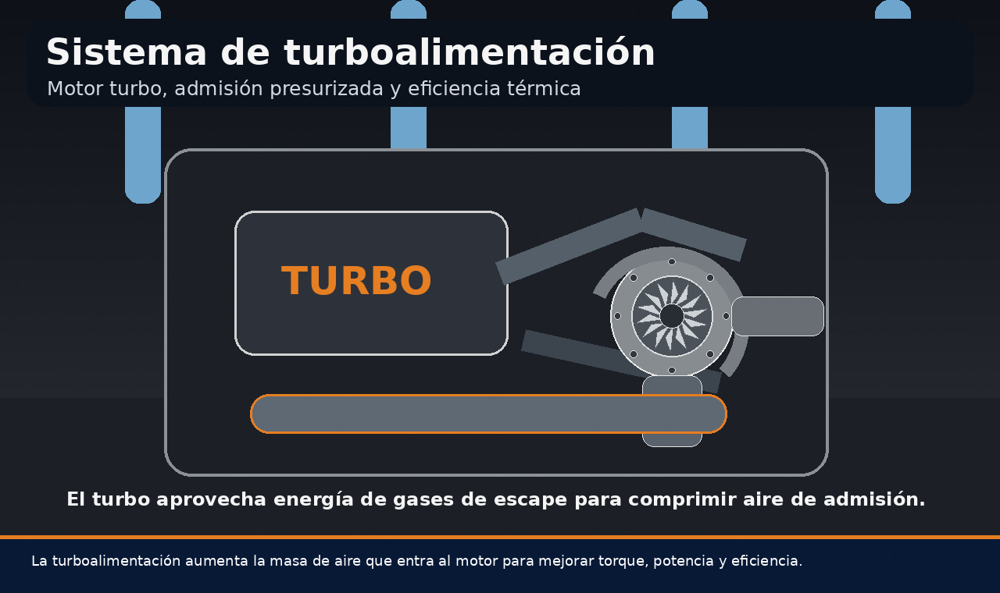
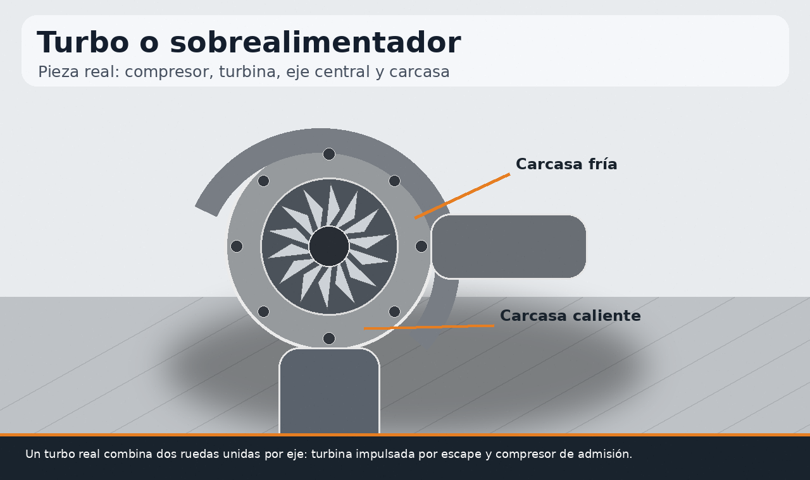
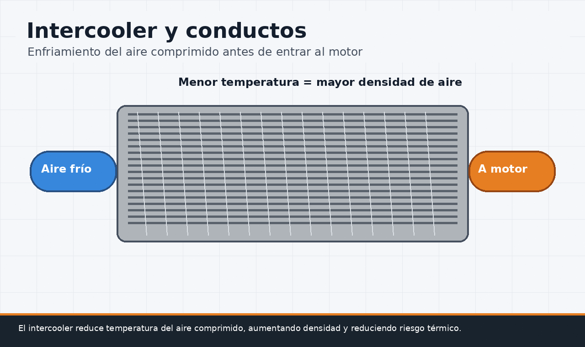
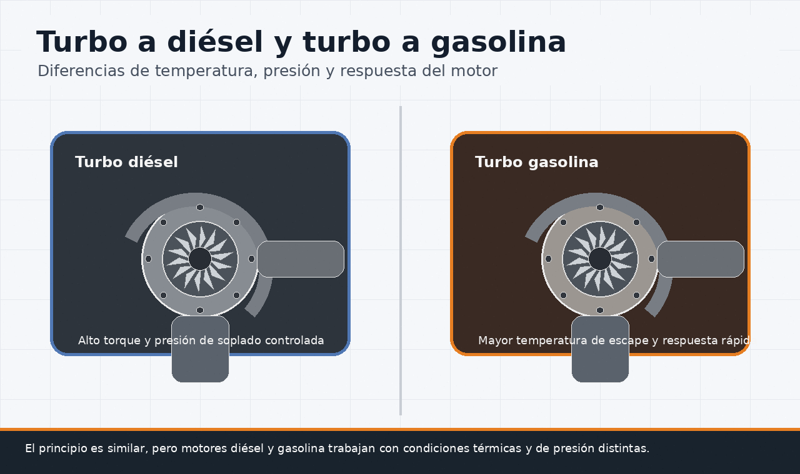
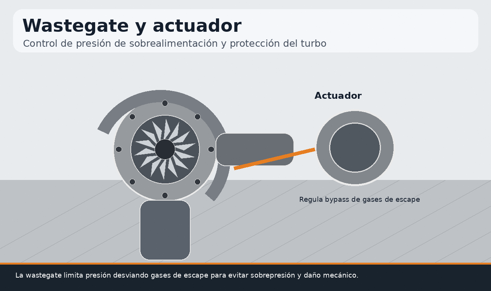
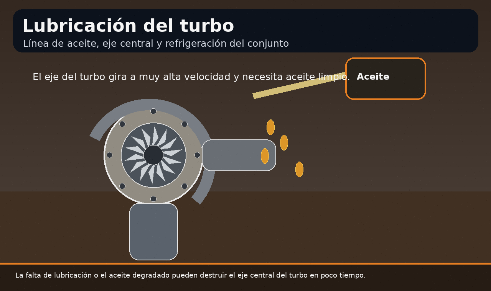
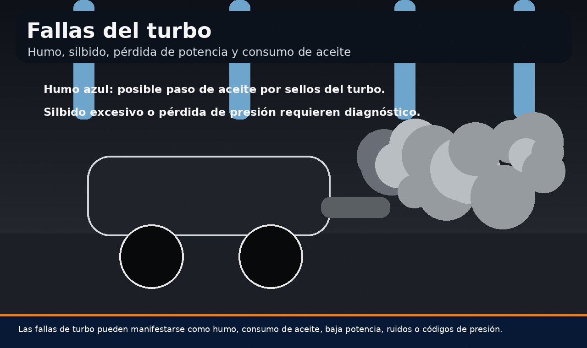
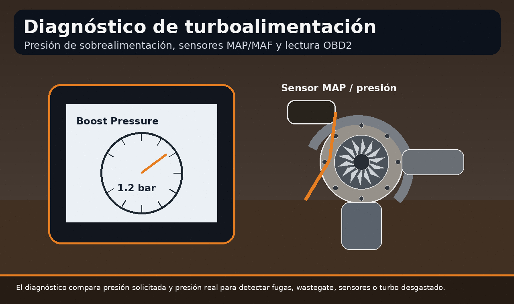

La turboalimentación es una tecnología diseñada para aumentar la cantidad de aire que entra al motor, aprovechando la energía de los gases de escape. En términos simples, el sistema de turboalimentación permite introducir más masa de aire en los cilindros, lo que hace posible quemar más combustible de manera controlada y generar mayor torque y potencia sin aumentar necesariamente la cilindrada del motor.
Esta guía explica qué es la turboalimentación, cómo funciona un turbo, cuáles son sus partes principales, qué diferencias existen entre un turbo a diésel y un turbo a gasolina, qué papel cumple el intercooler, cómo trabaja la wastegate, por qué la lubricación es crítica y cuáles son las fallas más comunes. También se integran conceptos relacionados con sistema de alimentación de aire, sistema de alimentación del vehículo, sistema de sobrealimentación y turbos o sobrealimentadores para motores a diésel.

Contenido del artículo
- Capítulo 1: Qué es la turboalimentación
- Capítulo 2: Sistema de turboalimentación y sus partes
- Capítulo 3: Cómo funciona el turbo
- Capítulo 4: Intercooler y sistema de alimentación de aire
- Capítulo 5: Turbo a diésel vs turbo a gasolina
- Capítulo 6: Wastegate, presión de soplado y control electrónico
- Capítulo 7: Lubricación, temperatura y fallas del turbo
- Capítulo 8: Diagnóstico, mantenimiento y conclusión técnica
Capítulo 1: Qué es la Turboalimentación
Para responder con precisión a la pregunta “qué es la turboalimentación”, hay que comprender primero que un motor necesita aire, combustible y compresión para generar combustión. En un motor atmosférico, el aire entra por la diferencia de presión creada durante la carrera de admisión. En cambio, en un motor turboalimentado, el aire es comprimido antes de entrar a los cilindros.
La turboalimentación forma parte de los sistemas de sobrealimentación. Un sistema de sobrealimentación busca introducir más aire del que el motor podría aspirar por sí solo. Ese aumento de aire permite incrementar la cantidad de oxígeno disponible para la combustión. Si la gestión electrónica, la inyección y la temperatura se mantienen bajo control, el resultado es un motor más potente y con mejor respuesta de torque.
En lenguaje práctico, muchas personas buscan términos como turboauto, turbo a diésel o turbo a gasolina para entender si su vehículo utiliza esta tecnología. Aunque el principio básico es similar, cada aplicación tiene diferencias de presión, temperatura, relación de compresión, gestión de combustible y estrategia de control.
Capítulo 2: Sistema de Turboalimentación y sus Partes
El sistema de turboalimentación está compuesto por varios elementos que trabajan de manera coordinada. El turbo no es una pieza aislada: forma parte del sistema de alimentación de aire y del sistema de alimentación del vehículo. Para que funcione correctamente, necesita escape, admisión, lubricación, refrigeración, sensores, actuadores y control electrónico.
Las partes principales incluyen la turbina, el compresor, el eje central, los cojinetes o rodamientos, la carcasa caliente, la carcasa fría, la wastegate o geometría variable según el diseño, el intercooler, las mangueras de admisión, la válvula de descarga o bypass, sensores MAP o MAF, líneas de aceite y, en algunos casos, líneas de refrigerante.
Turbo, compresor y turbina
Un turbo está formado por dos ruedas unidas por un mismo eje. La rueda de turbina recibe energía de los gases de escape. Al girar, transmite movimiento al compresor, que aspira y comprime aire fresco hacia la admisión. Esta relación convierte parte de la energía que normalmente se perdería por el escape en presión útil para el motor.
La carcasa caliente trabaja con gases de escape a alta temperatura, mientras que la carcasa fría trabaja con aire de admisión. Entre ambas se encuentra el cartucho central, donde el eje gira a velocidades muy elevadas. Por eso, la lubricación y el control térmico son fundamentales para la vida útil del conjunto.

Capítulo 3: Cómo Funciona el Turbo
El funcionamiento del turbo inicia en el escape. Después de la combustión, los gases salen del cilindro con energía térmica y cinética. En un motor sin turbo, esa energía se libera hacia el sistema de escape. En un motor turboalimentado, esos gases pasan primero por la turbina, haciéndola girar a gran velocidad.
Como la turbina y el compresor están unidos por un eje, el giro de la turbina mueve el compresor. Este aspira aire desde el filtro, lo comprime y lo envía hacia el sistema de admisión. Al comprimirse, el aire aumenta su presión, pero también su temperatura. Por eso, en muchos sistemas se utiliza un intercooler para reducir la temperatura antes de que el aire llegue al motor.
La frase “el sistema de alimentación turbo es el encargado de” puede completarse técnicamente así: el sistema de alimentación turbo es el encargado de aumentar la densidad del aire de admisión, controlar la presión de sobrealimentación, mejorar el llenado de los cilindros y permitir una combustión más energética sin necesidad de incrementar el tamaño físico del motor.
Capítulo 4: Intercooler y Sistema de Alimentación de Aire
Cuando el compresor del turbo aumenta la presión del aire, también eleva su temperatura. El aire caliente es menos denso y puede aumentar el riesgo de detonación en motores a gasolina o elevar la carga térmica en motores diésel. Por ello, el intercooler cumple una función esencial dentro del sistema de alimentación de aire.
Por qué se enfría el aire comprimido
El intercooler reduce la temperatura del aire antes de que entre al múltiple de admisión. Al bajar la temperatura, aumenta la densidad del aire, lo que mejora la cantidad de oxígeno disponible por volumen. Esto ayuda a obtener una combustión más eficiente y reduce el estrés térmico del motor.
Un intercooler sucio, con fugas o con mangueras dañadas puede provocar pérdida de presión, humo, menor potencia y códigos relacionados con presión de sobrealimentación. Por eso, el sistema de alimentación de aire debe revisarse completo: filtro, conductos, abrazaderas, intercooler, sensores y múltiple de admisión.

Capítulo 5: Turbo a Diésel vs Turbo a Gasolina
Aunque el principio de funcionamiento es parecido, un turbo a diésel y un turbo a gasolina no trabajan bajo condiciones idénticas. Los motores diésel suelen manejar alta relación de compresión, gran torque a bajas revoluciones y mezcla pobre por naturaleza. Los motores a gasolina, en cambio, suelen ser más sensibles a la detonación y a la temperatura del aire de admisión.
Los turbos o sobrealimentadores para motores a diésel son muy comunes porque el diésel se beneficia mucho del aumento de aire disponible. Un sistema de sobrealimentación motor diésel mejora torque, respuesta bajo carga y eficiencia en vehículos de trabajo, camionetas, motores industriales y autos modernos. En motores gasolina, el turbo permite obtener potencia elevada desde cilindradas menores, pero exige control preciso de combustible, encendido, temperatura y presión.
Diferencias de operación
En un turbo a diésel, la gestión se orienta a controlar presión, temperatura de escape, humo y respuesta de torque. En un turbo a gasolina, además de controlar presión, se debe evitar detonación, preignición y exceso de temperatura en la cámara. Por eso, la calidad del combustible, el intercooler, los sensores y la calibración electrónica son especialmente importantes.
En ambos casos, el turbo trabaja a velocidades muy altas y bajo fuerte estrés térmico. La diferencia está en cómo cada motor aprovecha esa presión y qué límites debe respetar para mantener confiabilidad.

Capítulo 6: Wastegate, Presión de Soplado y Control Electrónico
La presión de sobrealimentación debe controlarse. Si el turbo comprime demasiado aire, puede generar sobrepresión, exceso de temperatura, detonación, daño de juntas, fatiga de componentes o activación de modo protección. Para evitarlo, muchos turbos utilizan una wastegate o sistemas de geometría variable.
Función de la wastegate
La wastegate es una válvula que permite desviar parte de los gases de escape para que no pasen por la turbina. Al reducir la energía que llega a la turbina, se limita la velocidad del turbo y se controla la presión de soplado. Puede ser accionada por presión, vacío o actuador electrónico según el diseño.
Si la wastegate queda abierta, el motor puede tener baja presión de turbo y pérdida de potencia. Si queda cerrada o no regula correctamente, puede aparecer sobrepresión. En ambos casos, el sistema puede registrar códigos de falla relacionados con presión de sobrealimentación.

Capítulo 7: Lubricación, Temperatura y Fallas del Turbo
El turbo trabaja en un ambiente extremo. Su eje puede girar a velocidades altísimas y está expuesto a calor intenso proveniente del escape. Por eso, el aceite del motor cumple una función vital: lubricar el eje central, reducir fricción, evacuar calor y proteger los cojinetes. Un aceite degradado, bajo nivel, obstrucción en la línea de lubricación o apagado brusco después de uso intenso puede acelerar el desgaste.
Lubricación del eje central
El cartucho central del turbo necesita una película de aceite estable. Si esa película se rompe, el eje puede rozar, generar juego, dañar sellos y permitir paso de aceite hacia admisión o escape. Esto puede manifestarse como humo azul, consumo de aceite, ruido anormal o pérdida de presión.
En motores turbo, los intervalos de cambio de aceite deben respetarse con mayor rigor. También conviene usar el grado y especificación adecuados, ya que el turbo somete al lubricante a altas temperaturas y esfuerzos de cizallamiento.

Fallas comunes del turbo
Las fallas de un turbo pueden presentarse como humo azul, humo negro, silbido excesivo, pérdida de potencia, consumo de aceite, manchas en conductos de admisión, presión insuficiente, sobrepresión o códigos de sensor. No siempre el turbo es el culpable directo: una fuga en mangueras, intercooler fisurado, sensor MAP defectuoso o filtro de aire obstruido puede generar síntomas parecidos.
El humo azul suele asociarse a paso de aceite hacia admisión o escape. El humo negro puede indicar exceso de combustible, falta de aire, fuga de presión o problemas de inyección. Un silbido leve puede ser normal, pero un ruido agudo, metálico o creciente debe revisarse.

Capítulo 8: Diagnóstico, Mantenimiento y Conclusión Técnica
Diagnosticar un sistema de turboalimentación requiere observar datos reales. No basta con escuchar el turbo o mirar una manguera. Es necesario revisar presión solicitada, presión real, temperatura de aire, caudal de aire, estado de sensores, fugas en conductos, actuador de wastegate, intercooler, líneas de aceite y códigos de falla.
Diagnóstico con escáner y prueba de presión
Un escáner permite comparar la presión que la ECU solicita con la presión que realmente mide el sensor MAP. Si la presión real es menor, puede existir fuga, wastegate abierta, turbo desgastado, actuador defectuoso, filtro obstruido o intercooler dañado. Si la presión real es mayor, puede haber wastegate trabada, actuador fuera de rango o control electrónico incorrecto.
También es importante inspeccionar el juego del eje del turbo, presencia de aceite en admisión, estado de abrazaderas, mangueras agrietadas y obstrucciones en el escape. Una prueba de humo o presión en el sistema de admisión puede revelar fugas que no se observan visualmente.

8.1 Mantenimiento preventivo del sistema turbo
- Cambiar aceite a tiempo: usar grado y especificación correctos para proteger el eje del turbo.
- Revisar filtro de aire: un filtro obstruido afecta flujo de admisión y puede forzar el compresor.
- Inspeccionar mangueras: fugas en conductos reducen presión y generan pérdida de potencia.
- Verificar intercooler: suciedad, fisuras o aceite excesivo afectan eficiencia térmica.
- Evitar apagado brusco tras exigencia: permitir estabilización térmica ayuda a proteger el turbo.
- Atender humo o silbidos anormales: pueden indicar desgaste, fuga, aceite o problema de presión.
- Escanear códigos: revisar presión de sobrealimentación, sensores MAP/MAF y actuadores.
En conclusión, la turboalimentación es una tecnología altamente eficiente, pero también exige mantenimiento cuidadoso. El sistema de turboalimentación depende de aire limpio, aceite correcto, control térmico, sensores confiables y conductos sin fugas. Entender cómo trabaja el turbo ayuda a detectar fallas antes de que se conviertan en daños graves.